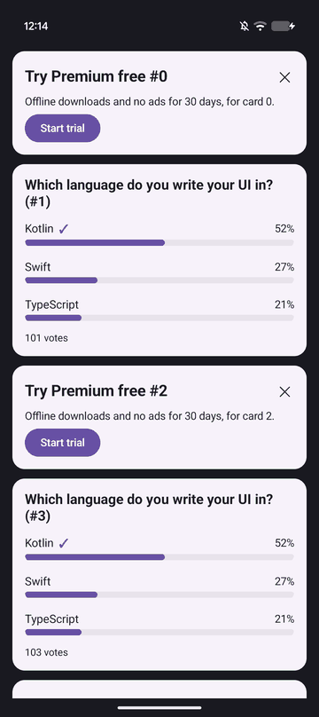
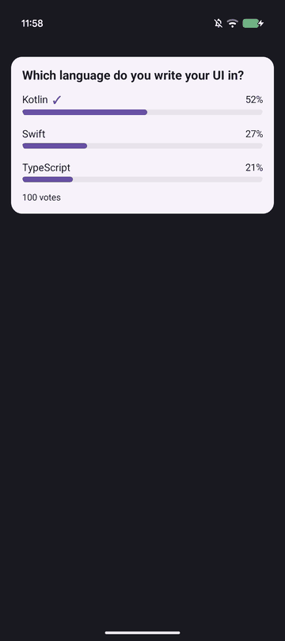
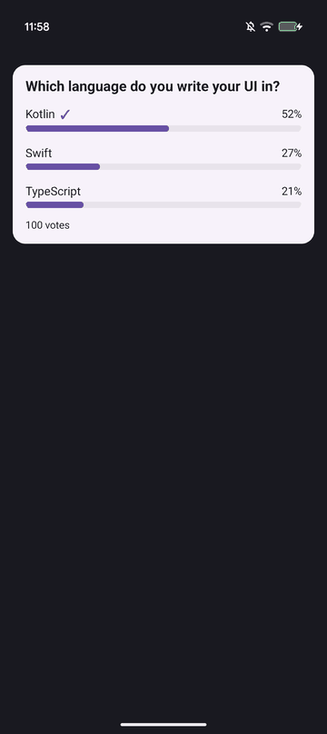
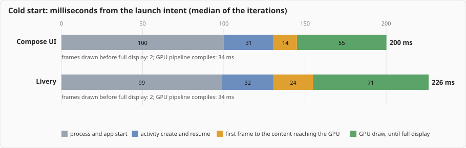
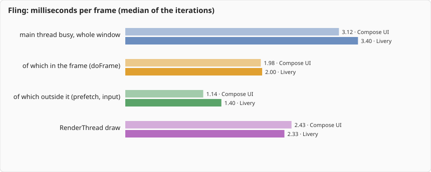

Benchmarks#
What a template costs against the same screen written in Compose UI, measured on a real phone. Every lane draws the same
pixels: TwinRenderParityTest renders each template and its Compose UI twin and fails if more than 1% of pixels differ,
in the feed's card size and in the full-screen frame below.
| Lane | What it is |
|---|---|
| Compose UI | The hand-written twin of the design |
| Livery | LiverySlot / LiveryTemplate with the defaults: background preparation, flat layout. Its first screen is prepared by Livery's startup, with the splash screen up until it is ready, as getting-started has it |
| Livery, no startup | The same with no startup: the slot plans as it first composes, and its first frame waits within the first-frame budget (cold start only) |
| Livery, lazy | Nothing prepared before the list shows: each slot plans as it composes, and LiveryPrepareAhead keeps the next 8 cards prepared (planning made to take 20 ms a card, as an app's own work would) |
| Livery, paged | The same over an endless androidx Paging feed, pages of 20 taking 300 ms |
| Livery, bars ease | Templates built with --default-animations, so a bar eases to its new width as the twin's does (animated feed) |
Pixel 9, Android 17 (API 37), benchmarkRelease with the shipped baseline profiles; one device, lanes run one after another.
The tests are a T: a spine of the lanes an app would use, run more (feed: 5 iterations of 4 flings; start-up: 10; data
change: 8), and a short bar of the rest, for completeness (3 iterations of 3 flings), which says whether a lane is wildly
off and not by how much. Times are a frame's CPU time (FrameTimingMetric); the overrun is against the 16.7 ms budget, so
negative is time to spare. Differences of a few tenths of a millisecond are inside the noise.
Feed#
6 flings down 200 sample cards (banner-classic and poll-card), as the benchmark host draws them on the phone, the Compose
UI twin on the left and Livery on the right:

They are not pixel-identical on the phone: the twin's card is a little taller (about 1–2 dp, the rows sitting slightly lower),
although TwinRenderParityTest finds no differing pixel at density 2.0 on the JVM and this phone is at 2.625. Treat the lanes
as the same design, not the same pixels.
| Lane | CPU p50 | CPU p90 | CPU p99 | Overrun p99 |
|---|---|---|---|---|
| Compose UI | 3.8 ms | 6.0 ms | 8.3 ms | −6.0 ms |
| Livery, everything prepared before the list shows | 3.7 ms | 6.0 ms | 8.7 ms | −5.4 ms |
| Livery, lazy: next 8 cards prepared ahead | 3.7 ms | 5.9 ms | 8.1 ms | −6.1 ms |
| Livery, paged (androidx Paging), next 8 ahead | 3.8 ms | 6.0 ms | 8.5 ms | −5.3 ms |
Livery is level with the Compose UI twin through p99 whether it prepares everything first, only the cards just ahead of the scroll, or pages. No lane misses a frame. Six frames of a fling in the Perfetto UI, 100 ms, the twin above and Livery below on one scale (click an image for the full size):


Lazy and paged feeds#
A card that scrolls in before its plan is ready draws the host's placeholder and swaps when it arrives. LiveryPrepareAhead
keeps the cards just ahead of the scroll planned and prepared, so each draws complete when it scrolls in. The table counts the
placeholders that became visible during the flings (3 iterations of 3 flings; the 8-ahead lane is in the spine, 5 of 4), with
planning made to take 20 ms a card, and the slower 60 ms:
| Lane | Planning a card | Unprepared cards reaching the screen | CPU p99 |
|---|---|---|---|
| Each slot plans as it composes | 20 ms | 11 | 11.0 ms |
| Each slot plans as it composes | 60 ms | 61 | 13.0 ms |
LiveryPrepareAhead, 2 cards ahead |
20 ms | 0 | 7.3 ms |
LiveryPrepareAhead, 4 cards ahead |
20 ms | 0 | 8.2 ms |
LiveryPrepareAhead, 8 cards ahead (the default) |
20 ms | 0 | 7.7 ms |
LiveryPrepareAhead, 16 cards ahead |
20 ms | 0 | 9.1 ms |
LiveryPrepareAhead, 8 cards ahead |
60 ms | 0 | 7.8 ms |
| Paged feed, each slot plans as it composes | 20 ms | 7 | 10.9 ms |
| Paged feed, 8 cards ahead | 20 ms | 0 | 8.6 ms |
A window of a few cards removes the unprepared cards, and the p99 returns to the prepared-first figure. The window has to cover the planning time of the fastest fling (about 6 cards a second here); the default is 8.


Changing data#
One template (poll-card) in a padded, top-aligned, full-width frame; the sample template takes its own height, so this is a
card on a full screen. Tapping the document shows the next of ten data variants, ten times. The Livery lane is one
LiverySlot whose card updates in place: it stays on screen while the new answer plans, and its player keeps its state.


| Lane | Frames over 10 changes | CPU p50 | CPU p90 | CPU p99 | Overrun p99 |
|---|---|---|---|---|---|
| Compose UI | 9.5 | 4.3 ms | 5.6 ms | 6.4 ms | −7.8 ms |
| Livery | 19 | 4.0 ms | 6.6 ms | 8.2 ms | −5.9 ms |
| Livery, no flat layout | 11 | 3.8 ms | 6.4 ms | 6.8 ms | −6.9 ms |
Livery draws about two frames for each change, the twin one; with flattenLayout = false it draws one, and the p99 matches the
twin's. A tap in the Perfetto UI, 100 ms:


Animated feed#
The visible polls' numbers change every second while the list flings. The catalog build turns a template's easing off unless
its author asked for it ("defaultAnimations": true), so a bar lands at once; the twin's bars can do either, so the lanes come
in pairs doing the same visible work.
| Lane | CPU p50 | CPU p90 | CPU p99 | Overrun p99 |
|---|---|---|---|---|
| Compose UI, bars land at once | 3.2 ms | 5.4 ms | 11.9 ms | −1.3 ms |
| Livery, bars land at once (the default) | 2.4 ms | 4.2 ms | 18.0 ms | +5.9 ms |
| Compose UI, bars ease | 3.2 ms | 5.7 ms | 12.0 ms | −1.6 ms |
| Livery, bars ease | 3.0 ms | 7.0 ms | 18.6 ms | +5.3 ms |
An ordinary frame is as cheap as the twin's or cheaper, and the frame on which every visible card updates is not. Livery's median and p90 are at or under the twin's, and the p99 (18 ms, with missed frames) is that frame: all the visible cards' new values compose in one frame, where the twin's worst frames stay near 12 ms. In the trace, 13 frames of a run are over 12 ms (the longest 20 ms), each with about 10 ms of recomposition and about 6 ms of drawing, where the twin has none over 12 ms. The longest frame of the run with the bars landing at once, the twin above and Livery below, 100 ms:


Cold start#
Process start to the first frame with the document in it, 10 iterations, median (range):
| Lane | Initial display | Full display |
|---|---|---|
Livery (startup, splash screen held) |
195 ms (140–221) | 226 ms (209–252) |
Livery, no startup (first-frame budget) |
214 ms (196–234) | 242 ms (222–265) |
| Compose UI | 191 ms (167–204) | 200 ms (177–220) |
With startup Livery's first frame is the one with its card in it, and it arrives at about the same time as the twin's; the
first-frame budget without startup holds it until the slot's answer is there, about 20 ms later. Livery's startup takes
27 ms on a worker thread, and the splash screen is held for it by 11 ms in the median: it mostly fits in the activity's
creation on this phone. The ranges are wide and overlap, so with ten runs per lane the order of Livery with startup and the
twin is a tendency, not a result. The Perfetto UI, 100 to 250 ms after the launch intent, the green flag full display:


What the traces show#
Perfetto traces of the same runs say where the time went. Each benchmark iteration records one, and
livery-baselineprofile/traces/compare.py takes the median over the iterations of a lane and puts the Compose UI twin and
Livery side by side. (The perfetto-traces agent skill in .claude/skills/ describes how to read these traces.)
Cold start#

| Cold start (ms from the launch intent) | Compose UI | Livery | Difference |
|---|---|---|---|
| bindApplication ends | 99.95 | 98.9 | -1.05 |
| activity resumed | 123.25 | 124 | +0.75 |
| first frame starts | 130.75 | 130.55 | -0.2 |
| document drawn on screen (RenderThread frame with content) starts | 145.05 | 154.9 | +9.85 |
| reportFullyDrawn | 194.1 | 202.3 | +8.2 |
| full display (end of the first frame drawn after it) | 200.2 | 226.15 | +25.95 |
| frames drawn before that | 2 | 2 | 0 |
| main thread: Compose initializeView | 2.7 | 1.6 | -1.1 |
| main thread: recompose | 0.7 | 3.6 | +2.9 |
| main thread: measure | 3.45 | 4.3 | +0.85 |
| main thread: text layout | 0.2 | 0 | -0.2 |
| RenderThread: frame that draws the content | 45.15 | 45.65 | +0.5 |
| RenderThread: GPU pipeline compiles | 33.85 | 34.4 | +0.55 |
| RenderThread: GPU pipeline compile count | 4 | 4 | 0 |
- The first 125 ms are the same. Process start, app initialisation and creating the activity run the same code in both lanes.
- Livery's content frame arrives about 10 ms after the twin's. In that stretch the main thread has no slice longer than a millisecond, because the work is on a worker thread: Livery plans and prepares the document there (the next table).
- Then Livery's main thread does a little more: composition takes about 3.6 ms against 0.7, and measure 4.3 against 3.5.
- The GPU's share is the same. Both lanes compile four pipelines the first time the screen is drawn; that is the driver, not the template.
Where Livery's cold start goes#
Livery marks its own phases in the trace (livery:<phase>:<design>, see below), including work on other threads, median of 10:
| Livery section | Count | Total |
|---|---|---|
livery:asset-read (ms) |
– | 0.5 |
livery:bind (ms) |
– | 0.3 |
livery:compose (ms) |
– | 2.8 |
livery:for-display (ms) |
– | 10.25 |
livery:manifest-decode (ms) |
– | 4.9 |
livery:plan (ms) |
– | 6.4 |
livery:prepare (ms) |
– | 20 |
livery:ready (ms) |
– | 0.75 |
livery:resolve (ms) |
– | 6.05 |
livery:startup (ms) |
– | 27.5 |
The worker's time is almost all document preparation (livery:prepare, 20 ms), and about half of that is the rewrite for the
display's density (livery:for-display, 10 ms). It overlaps the activity's creation, so it is off the critical path on this
phone.
Fling#

| Fling (per frame) | Compose UI | Livery | Difference |
|---|---|---|---|
| frames | 454 | 463 | +9 |
| in the frame: doFrame ms, mean | 1.98 | 2 | +0.02 |
| in the frame: doFrame ms, p90 | 3.08 | 3.35 | +0.27 |
| in the frame: doFrame ms, p99 | 5.3 | 5.68 | +0.38 |
| in the frame, per frame ms: animation (recomposition, effects) | 0.706 | 0.714 | +0.008 |
| in the frame, per frame ms: draw recording (draw-VRI) | 0.889 | 0.937 | +0.048 |
| in the frame, per frame ms: measure and layout | 0.488 | 0.494 | +0.006 |
| in the frame, per frame ms: RenderThread draw (DrawFrames) | 2.429 | 2.325 | -0.104 |
| whole window, per frame ms: main thread busy (all top-level slices) | 3.122 | 3.4 | +0.278 |
| whole window, per frame ms: of which outside doFrame (prefetch, input, other) | 1.139 | 1.404 | +0.265 |
| whole window, per frame ms: Recomposer:recompose | 0.013 | 0.013 | 0 |
| whole window, per frame count: Compose:recompose passes | 0.18 | 0.19 | +0.01 |
| whole window, per frame count: text layouts (TextLayout:initLayout) | 1.33 | 1.17 | -0.16 |
| whole window, per frame ms: text layout | 0.136 | 0.031 | -0.105 |
| whole window, per frame ms: livery:compose (one card composition, Livery only) | 0 | 0.427 | +0.427 |
The main thread does about the same work per frame, within 0.4 ms, and Livery's cards show up as composition passes in the
recomposer (livery:compose, 0.4 ms a frame) where the twin's lazy list composes its upcoming items between frames.
How the host measures#
- No emoji initializer. AndroidX Compose depends on
emoji2, whose startup initializer loads the emoji font after the first frame and makes Compose text re-measure. Livery's manifest removes it from any app that uses Livery, and Livery loads emoji itself two frames after its first template draws (LiveryEmoji), so no lane has the initializer. - Every lane installs the splash screen. The activity's starting theme is core-splashscreen's in every lane, so they run the
same activity code; only the Livery lanes with
startupkeep it up. - The twin builds nothing of Livery: no repository and no catalog read.
- Fully drawn is reported after the document draws. The Compose UI lane reports after the frame that composed the document;
the Livery lanes report on Livery's
Impressionevent, which already follows the template's first frame. Every lane then asks for one more frame afterreportFullyDrawn(), sinceStartupTimingMetricends at the next frame drawn.
Livery's trace sections#
LiveryTrace (in livery-client) writes named sections to the system trace on Android and does nothing elsewhere; a section's
name is livery:<phase>[:<design or contract>] and never carries data. Synchronous ones sit on their thread's track; ones that
can resume on another thread (planning, resolving, preparing, fonts, image fetches) are async tracks.
| Section | Wraps |
|---|---|
livery:startup |
an app's startup, preparing its first screen (from the call to ready) |
livery:plan:<design> |
SlotPlanner choosing a template and binding data for a slot, decision or feed item |
livery:resolve:<design> |
the repository choosing the template and reading its bytes |
livery:asset-read:<sha>, livery:manifest-decode |
the bundled catalog's blobs and manifest (Android; the manifest is decoded where it is first needed) |
livery:bind:<contract> |
ContractBinder.bind, data against the contract |
livery:prepare:<design> |
the player's document preparation: decode, link, rewrite |
livery:for-display |
the rewrite for the display, inside prepare |
livery:ready:<design> |
a card's document and fonts ready (readyToDraw) |
livery:fonts:<design>, livery:font-load:<sha> |
catalog fonts read and loaded |
livery:image-resolve:<kind>, livery:image-decode |
an image's bytes and their decode |
livery:compose:<design> |
a card's own composition: its first, and each time its prepared document or fonts arrive; not later recompositions inside the player's own scopes |
livery-baselineprofile/traces/compare.py totals them per phase for the cold-start window.
Not measured#
A warm second visit; idle frames; resize and theme change; a per-template split and counts of documents prepared and reused;
memory; baseline profile on against off; a low-end device. The plan, in order, is
docs/benchmarks/PLAN.md.
Reproduce#
With a phone connected, in portrait (a device with a low battery is refused, as it throttles):
livery-baselineprofile/run-benchmarks.sh routine # the spine and the short bar, about 45 minutes
livery-baselineprofile/run-benchmarks.sh spine # the spine alone
(./gradlew :livery-benchmark:connectedBenchmarkReleaseAndroidTest runs every lane.) The tables under "What the traces show"
are python3 livery-baselineprofile/traces/compare.py <the traces> --svg site/assets/benchmarks, and the Perfetto UI screenshots
are livery-baselineprofile/traces/screenshots.py, which serves the official Perfetto UI (checked against its published
hashes) and the traces from your own machine and writes only the images. The raw medians behind the tables are in
docs/benchmarks/results/. The host app and benchmarks
are in livery-baselineprofile/; its README describes each lane. A JVM profile (:livery-compose:liveryFeedProfile) gives
the same comparison without a device, with software rendering, for quick iteration.
Tested at#
Livery 62bf078, rc-players 3.6.1, Pixel 9, Android 17 (API 37).